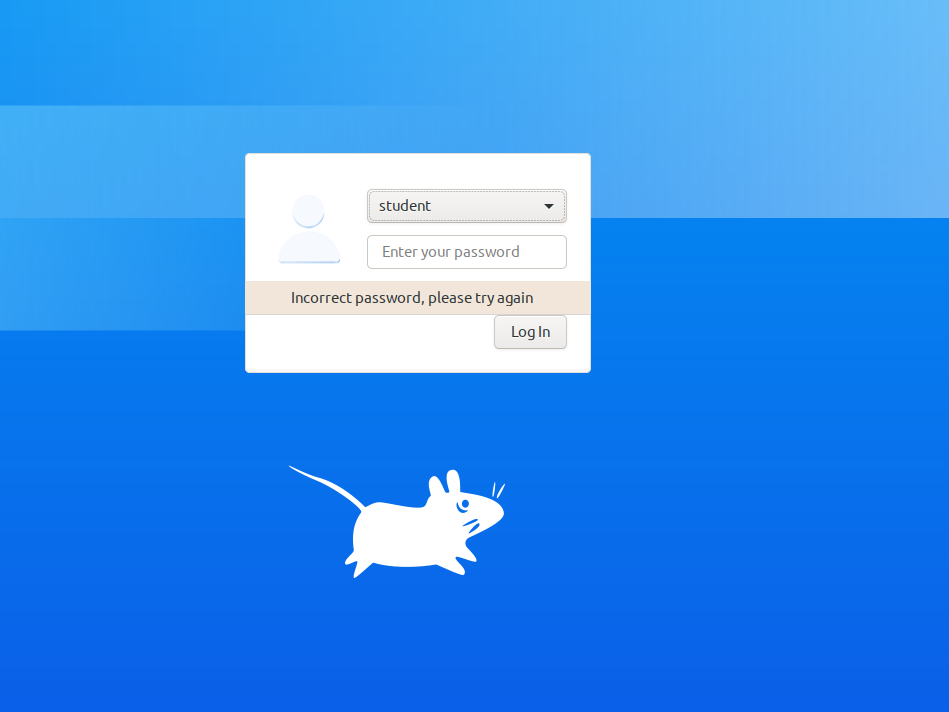

Itko krenuo s ovim?
Jel netko uspio dohvatit fileove za vježbu? Kada pokušam pullati baca mi: error: cannot open .git/FETCH_HEAD: Permission denied
error: cannot open .git/FETCH_HEAD: Permission denied
lucylu
sudo git pull je rijesilo problem IIRC
sudo git pull
 jel netko zna sifru?
Edrudo Internet1
po cemu se razlikuju pcap datoteke u 1. zadatku?
blablajar zna li netko ovo? nisam siguran na što se fokusirati, jasno mi je da je se razliku po broju paketa, ali to mi zvuči banalno
kako instalirati ovaj aircrack-ng? ili to već ima negdje u virtualki
BillIK ima vec, sam upisi to u terminal
Koliko je potrebno vremena za ovaj labos?
anon00 htio bih i ja znat da znam kolko jos mogu odgadat😃 jel netko rijesio mozda da zna cca kolko treba?
Meni je trebalo 1-2 sata
gdje je link na git repo? ne mogu nigdje nac..
EDIT: naso, zaboravio na moodle
U drugom zadatku pokusavam u bashu od PC-a pokrenut ./mitm.sh ali kaze “No such file or directory”… netko možda zna gdje griješim?
PepGuardiola mitm.sh se nalazi u direktoriju zadatak1 na virtualki, ne u PC čvoru s Imunesa
kako doci do lozinki u plain text formatu u 1. zad? ja dobijem samo nekakav key u oba slucaja
🤡 key to sto trebas, njega ces ubacit u wireshark u nekom sljedećem koraku
sta treba napravit u trecem zadatku da bi se uopce moglo executeat? promijenila sam IP adrese, al javlja mi da ne može konfigurirati nove čvorove
pingvinka koja je tocno poruka koju javlja?